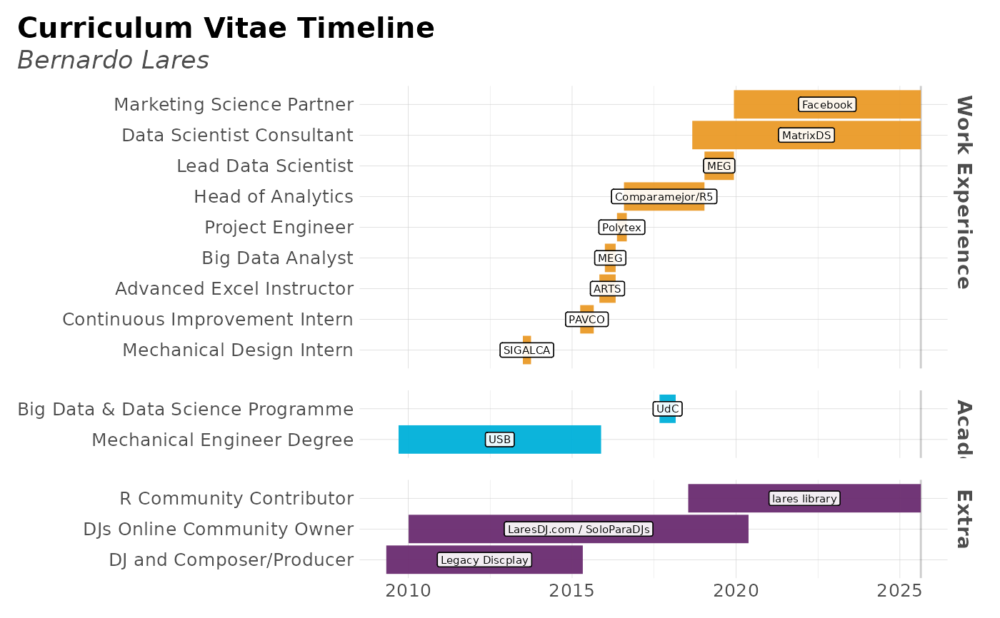

This function plots groups of observartions with timelines in a Gantt Plot way. Only works if start and end are date format values.
plot_timeline( event, start, end = start + 1, label = NA, group = NA, title = "Curriculum Vitae Timeline", subtitle = "Bernardo Lares", interactive = FALSE, save = FALSE, subdir = NA )
| event | Vector. Event, role, label, or row. |
|---|---|
| start | Vector. Start date. |
| end | Vector. End date. Only one day be default if not defined |
| label | Vector. Place, institution, or label. |
| group | Vector. Academic, Work, Extracurricular... Pass as factor to keep a specific order |
| title | Character. Title for the plot |
| subtitle | Character. Subtitle for the plot |
| interactive | Boolean. Run with plotly? |
| save | Boolean. Save the output plot in our working directory |
| subdir | Character. Into which subdirectory do you wish to save the plot to? |
Other Visualization:
distr(),
freqs_df(),
freqs_list(),
freqs_plot(),
freqs(),
gg_bars(),
gg_pie(),
noPlot(),
plot_chord(),
plot_survey(),
summer(),
theme_lares(),
tree_var()
options("lares.font" = NA) # Temporal cols <- c("Role", "Place", "Type", "Start", "End") today <- as.character(Sys.Date()) cv <- data.frame(rbind( c("Marketing Science Partner", "Facebook", "Work Experience", "2019-12-09", today), c("Data Scientist Consultant", "MatrixDS", "Work Experience", "2018-09-01", today), c("R Community Contributor", "lares library", "Extra", "2018-07-18", today), c("Lead Data Scientist", "MEG", "Work Experience", "2019-01-15", "2019-12-09"), c("Head Data Science & Analytics","Comparamejor/R5","Work Experience","2016-08-01","2019-01-15"), c("Big Data & Data Science Programme", "UdC", "Academic", "2017-09-01", "2018-02-28"), c("Project Engineer", "Polytex", "Work Experience", "2016-05-15", "2016-09-01"), c("Big Data Analyst", "MEG", "Work Experience", "2016-01-01", "2016-04-30"), c("Advanced Excel Instructor", "ARTS", "Work Experience", "2015-11-01", "2016-04-30"), c("Continuous Improvement Intern", "PAVCO", "Work Experience", "2015-04-01", "2015-08-30"), c("Mechanical Design Intern", "SIGALCA", "Work Experience", "2013-07-01", "2013-09-30"), c("DJs Online Community Owner","LaresDJ.com / SoloParaDJs","Extra","2010-01-05","2020-05-20"), c("Mechanical Engineer Degree", "USB", "Academic", "2009-09-15", "2015-11-20"), c("DJ and Composer/Producer", "Legacy Discplay", "Extra", "2009-05-01", "2015-04-30") )) colnames(cv) <- cols plot_timeline(event = cv$Role, start = cv$Start, end = cv$End, label = cv$Place, # Simple trick to re-arrange the grids group = factor(cv$Type, levels = c("Work Experience", "Academic", "Extra")))